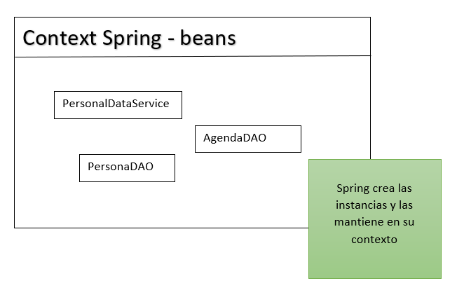
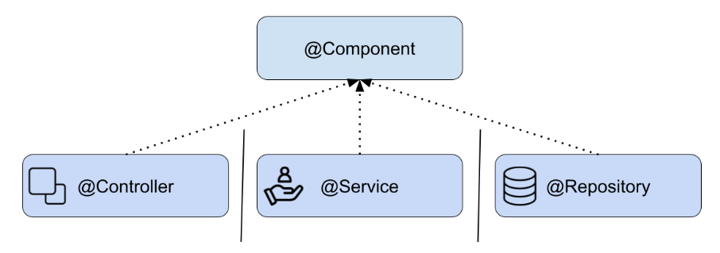
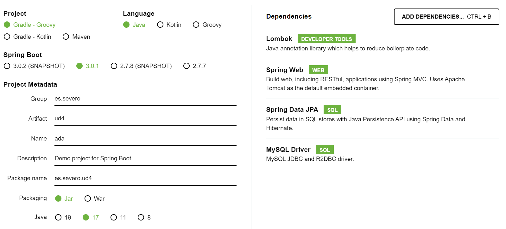
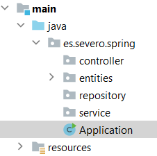

🖲️ Introducción a Spring Framework - Web oficial
Debido al aumento de la complejidad que presentan la mayoría de los sistemas web, tanto en temas de seguridad, funcionalidad y gráficas, la comunidad de desarrolladores se vio en la necesidad de diseñar ciertas ayudas, a fin de no tener que repetir código, reduciendo de este modo el tiempo y el espacio para el desarrollo de aplicaciones.
Lanzado por primera vez, como una plataforma de código abierto Java, en el mes de Junio del año 2003 bajo la licencia Apache 2.0, se convirtió desde entonces en el framework más popular para Java empresarial, para crear código de alto rendimiento, liviano y reutilizable.
Su finalidad es estandarizar, agilizar, manejar y resolver los problemas que puedan ir surgiendo en el trayecto de la programación.
Spring se puede considerar como el padre del los frameworks Java, ya que da soporte a varios frameworks como: Hibernate, Struts, Tapestry, EJB, JSF entre otros.
La versión actual de Spring Framework es la 6.x.x, esta versión requiere Java 17+ y puedes obtener la documentación desde su web oficial.
🪔 Módulos de Spring
Spring está compuesto por muchas librerías y cada una de ellas está destinada a una finalidad: Bases de datos, Seguridad, Servicios Web, etc. Así, estas librerías se engloban en distintos módulos listos para usar. Éstos son algunos de ellos:
- Spring Core Container: IoC Container (Inversión de Control): Administra la creación, configuración y destrucción de objetos (beans) en una aplicación. DI (Inyección de Dependencias): Permite la inyección de dependencias en los objetos, facilitando la configuración y el mantenimiento.
- Spring AOP (Aspect-Oriented Programming): Facilita la programación orientada a aspectos, permitiendo separar preocupaciones transversales como la seguridad y el registro del código principal.
- Spring Data: Proporciona librerías necesarias para trabajar con bases de datos relacionales y no relacionales.
- Spring Cloud: Facilita el despliegue de aplicaciones Spring en plataformas ubicadas en la nube.
- Spring Security: Ofrece librerías que facilitan la seguridad en aplicaciones Spring, en relación a controles de acceso y autenticación.
- Spring Batch: Se utiliza para automatizar tareas batch. Estas tareas normalmente s ejecutan en horaríos nocturnos y donde se manejan grandes cantidades de datos.
- Spring Model-View-Controller (MVC): Ofrece una implementación del patrón MVC para el desarrollo de aplicaciones web.
- Spring Test: Ofrece soporte para la escritura y ejecución de pruebas unitarias y de integración para componentes de Spring.
Estos módulos pueden reducir drásticamente el tiempo de desarrollo de una aplicación.
🪔 ¿Qué es Spring Boot?
Spring Boot es básicamente una extensión del marco Spring, que elimina las configuraciones repetitivas necesarias para configurar una aplicación Spring.
¿Cómo arranca Spring Boot?
El punto de entrada de una aplicación Spring Boot es la clase anotada con @SpringBootApplication. De forma predeterminada, Spring Boot utiliza un contenedor integrado para ejecutar la aplicación. En este caso, Spring Boot utiliza el punto de entrada principal público estático y vacío para iniciar un servidor web integrado.
Otra característica de Spring Boot es que escanea automáticamente todas las clases en el mismo paquete o subpaquetes de la clase principal en busca de componentes.
🪔 Requisitos para crear un proyecto con Spring
Para crear un proyecto con Spring debemos realizar una serie de pasos:
- Elegir el tipo de proyecto, es decir, elegir la herramienta de construcción del proyecto: Maven o Gradle y la versión de Java.
- Seleccionar las dependencias que necesitamos y su versión.
- Construir la estructura de directorios de nuestro proyecto, donde estará el código fuente, los ficheros properties, plantillas, etc.
- Uso y configuración de beans.
🪔 Beans
Para entender el concepto de bean en Spring necesitamos entender antes una serie algunos conceptos y cómo administra Spring los objetos beans.
🪃 Dependency Injection (DI)
La inyección de dependencias es un patrón de diseño que tiene como objetivo tomar la responsabilidad de crear las instancias de las clases que otro objeto necesita y suministrárselo para que esta clase los pueda utilizar.
Habitualmente nuestras clases dependen de otras para funcionar. Este patrón permite que una clase no sea responsable de crear o administrar sus dependencias, sino que estas le sean inyectadas desde el exterior.
Ejemplo de DI
Por ejemplo, una clase que necesita buscar un registro en la base de datos necesitará de otra que se encargue de buscarlo.
Pensemos en estas dos clases. Llamemos a la primera PersonalDataService que es la encargada de tomar decisiones sobre el negocio y a la segunda PersonaDAO, la cual se encargará de acceder a la base de datos.
La clase PersonalDataService depende de la clase PersonaDAO para lograr el acceso a los datos en la base de datos, es decir, la clase PersonalDataService sería la responsable de crear una instancia de la clase PersonaDAO.
En la inyección de dependencias ‘alguien’ externo se encarga de las dependencias que las clases necesitan.
🪃 Inversion of Control (IoC)
Spring también maneja el concepto de inversión de control ocupándose de mantener en su ‘contexto’ (application context) todas las instancias de nuestra aplicación y de inyectarle esa instancia a quien la necesite.
Spring llama a estas instancias beans.

Los beans son las instancias de las clases que están disponibles para ser reutilizados y son gestionados dentro del contenedor de Spring (Spring container). Spring sabe qué dependencias existen entre las instancias y se encarga de satisfacerlas.
Note
IoC es el trabajo que realiza Spring buscando estas dependencias entre los objetos y realizando el ‘set’ de estos beans en quien los requiera. Busca en su contenedor de beans la instancia adecuada y se la agrega al objeto cumpliendo así con la inyección de dependencias.
🪃 Definir un Bean
Para definir un nuevo bean en Spring tenemos dos opciones:
- Podemos definir explícitamente un nuevo bean mediante la anotación
@Bean. - Podemos marcar una clase Java como un bean, y permitir a Spring que lo descubra, esto se hace mediante el escaneo de componentes.
Estas son dos técnicas diferentes para añadir beans a nuestro contexto.
🪔 ¿Qué es un componente @Component en Spring?
Spring define un conjunto de anotaciones core que categorizan cada uno de los componentes asociandoles una responsabilidad concreta, es lo que llamamos Spring stereotypes.
Una clase con la anotación @Component es un candidato a ser escaneado mediante el proceso de negociación, e instanciado como un bean y añadido al contexto.
Cuando indicamos que una clase es un @Component, lo que hacemos es decirle a Spring que queremos que cree una instancia y la gestione.
@Component
public class MyClass {
public void doSomething() {
//..
}
}
- Buscará dentro de la aplicación las clases anotadas con
@Component - Creará una instancia de los componentes
- Dejará el componente en su contexto
- Buscará quién necesita esos componentes y los inyectará en quién los necesite.
🪃 Spring Stereotypes
Los estereotipos (Stereotypes) son componentes que extienden de @Component.
Existen cuatro:
-
@Component: estereotipo general.
-
@Repository: será parte de la ‘capa’ de persistencia cuya función será el acceso a los datos.
-
@Service: será parte de la ‘capa’ de servicios encargado de gestionar las operaciones de negocio más importantes a nivel de la aplicación y aglutina llamadas a varios repositorios de forma simultánea.
-
@Controller: realiza las tareas de controlador y gestión de la comunicación entre el usuario y el aplicativo. Existe
@RestControllerque es una especialización de controller.

🪔 Cómo crear un proyecto con Spring en IntelliJ
Podemos ayudarnos de la herramienta spring initializr para crear el proyecto. Seleccionamos la siguiente configuración:

La exportamos y extraemos para abrir como un proyecto nuevo en IntelliJ.
Instalamos los plugins en IntelliJ llamados JPA Buddy y Lombok que serán de gran ayuda para desarrollar algunas funcionalidades y ahorrarnos boilerplate.
🪔 Autoconfiguración del proyecto
La anotación @SpringBootApplication habilita el mecanismo de configuración automática de la aplicación en función de las dependencias jar que encuentre en el classpath y se encarga del escaneo de componentes.
🪔 Estructura del proyecto
La estructura de un proyecto en Spring debe contener los siguientes paquetes entre otros:
